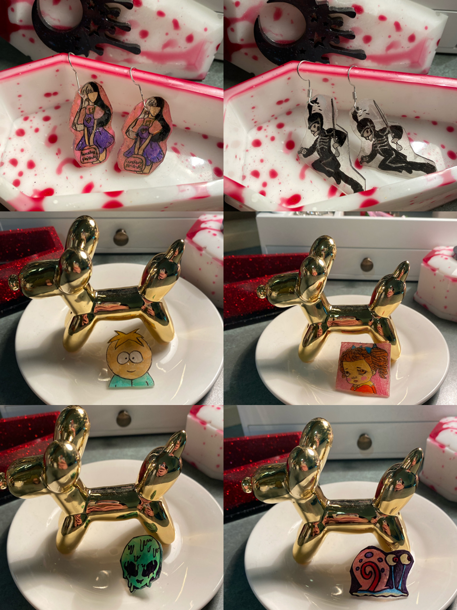

On my depop i create earrings out of polymer clay. To do this I sculpt the clay into the shape desired and then back it in the oven. I incorparate the earring backs within the clay.

On my depop i create earrings out of polymer clay. To do this I sculpt the clay into the shape desired and then back it in the oven. I incorparate the earring backs within the clay.
I create shrink plastic earrings by drawing out the design, colouring it in and punching a hole at the top, this then goes in the oven and shrinks. Once flattened, I glue the earring back on with hot glue or super glue for then pin backs.
